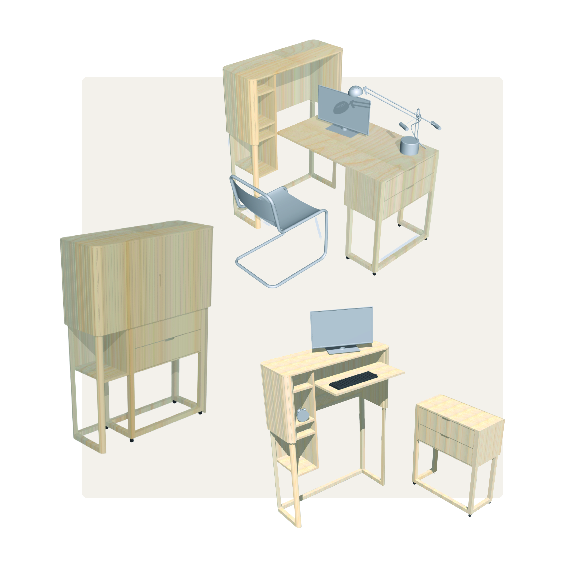

Furniture for Healhtier Remote Work
Type: Group work
When: 2022
Duration: Ten weeks, half time
Project scope: Bachelor thesis in collaboration with AJ Produkter
This project explored how a healthier home workplace could be designed for remote and hybrid work. During the COVID-19 pandemic, working from home shifted from a temporary solution to a long-term reality, revealing that most homes were not designed for healthy, prolonged work. Grounded in user research and existing studies, the project addressed challenges such as limited space, poor ergonomics, and the blurred boundary between work and everyday life. The project was carried out in collaboration with AJ Produkter, focusing on wellbeing without turning the home into a traditional office.

Process
The project followed a user-centred design process, starting with background research into remote work and ergonomics. A user study combining surveys, interviews and home observations provided insights into everyday needs and challenges. These insights were translated into requirements that guided ideation, prototyping, concept evaluation and the final selection.

User study
A survey and in-depth interviews were conducted to understand everyday experiences of working from home. In addition, photo-based observations of participants’ home work environments were used to capture spatial conditions and everyday setups. The insights from the study informed the project’s problem definition and design direction.
The problem
Working from home revealed several recurring challenges across different living situations. Most participants did not have a dedicated home office and instead worked at kitchen tables, in living rooms or by switching between different places in the home. Limited space often led to improvised workstations and compromises in ergonomics.
While flexibility was highly valued, many described a lack of variation during the workday, resulting in prolonged static postures and mental fatigue. Non-adjustable work surfaces caused physical discomfort in the neck, shoulders and back, with symptoms often increasing throughout the day and remaining after work hours.
In addition, the close overlap between work and everyday life made it difficult to disconnect mentally from work. When the workspace remained visible after hours, recovery was reduced and the home lost its role as a place for rest. Together, these issues highlighted the need for solutions that support health, flexibility and clear boundaries without turning the home into a traditional office.

From research to requirements
The user study generated both quantitative and qualitative data. Survey responses helped identify broader patterns, while interviews and photo-based observations revealed more detailed insights into participants’ daily routines, work setups and challenges. A KJ analysis was used to organise the qualitative material into themes and highlight the issues that mattered most. Based on this analysis, a functional and requirement list was created and later developed into a detailed specification that guided the concept development.
Requirements summary
- Easy to store away
- Easy to bring out
- Simple transition between sitting and standing
- Supports flexible work across the home
- Sufficient workspace for computer-based tasks
- Integrated storage for work materials
- A homely rather than office-like expression

Design direction
The moodboard explored a balance between functionality and a warm, domestic expression. Inspired by Scandinavian furniture, soft materials and neutral tones, the goal was to create a solution that supports work without disrupting the feeling of home.
Concept development
Based on the requirements and design direction, the concept development began with a broad exploration of many ideas, investigating different ways of supporting flexibility, ergonomics and integration into the home. These were gradually narrowed down to seven initial ideas, further refined into three stronger concepts, and finally developed into one final concept. Throughout the process, the ideas were continuously iterated and evaluated in relation to the design direction and the requirement specification, ensuring that the final concept responded to both user needs and the overall design goals.


The result - Urban
Urban is a modular furniture concept consisting of a cabinet with a foldable work surface and a mobile drawer unit. The elements can be used together in different configurations or separately, supporting both sitting and standing work depending on how the furniture is arranged. The concept creates a dedicated yet flexible workspace in the home, while allowing work materials to be easily stored away after use. Through its adaptable structure, Urban supports variation in posture, movement, and location within the home, helping to establish a clearer boundary between work and everyday life. The form, material, and detailing are designed to integrate naturally into a home environment, avoiding the expression of traditional office furniture. Light wood, soft geometries and integrated handles contribute to a calm and cohesive appearance.